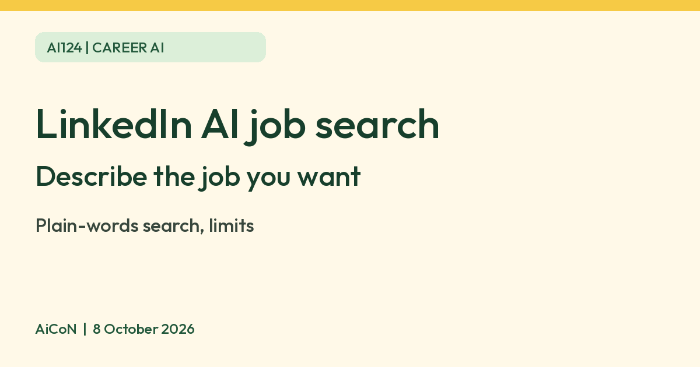

LinkedIn AI-powered job search: describe the job you want in your own words
LinkedIn says its AI-powered job search lets you describe the role you want in your own words and matches your intent against job descriptions, without exact keywords or filters. LinkedIn says it is being made available gradually, so you may not have it yet.

What it is
LinkedIn's Help page says AI-powered job search lets you describe the role you want in your own words, then matches your search intent against millions of job descriptions. You do not need exact keywords or filters. LinkedIn says it uses large language models fine-tuned on its own data, and that a search like "entry-level marketing jobs" can surface roles such as Marketing Coordinator or Junior Marketing Associate even if the listing never says "entry-level".
How to phrase a search, per LinkedIn
- Start with a role. Searches with no job title, like "remote jobs", may return less relevant results.
- Add context. LinkedIn says "I want a remote job that uses my background as a growth product manager" works better than just "Product Manager".
- Use the full job title. Short words like "PM" or "architect" mean different things in different fields.
- You can add location, experience level, skills and employment type.
LinkedIn's examples include "I am looking for entry-level sales jobs in healthcare posted in the last week". After you search, suggested filters appear under the search bar.
Limits to know
- LinkedIn says it is gradually making this available, and you might not have access yet.
- LinkedIn says it does not yet support excluding things (for example "healthcare jobs excluding nurse roles") or searches based on your profile, such as "jobs I'm qualified for".
- LinkedIn says it may use your profile data and search activity to personalise results. Check your LinkedIn privacy settings if that matters to you.
- A job match is only a suggestion. Read the listing and check the company before you apply or share documents.
- LinkedIn's page says nothing about price, or about which languages or countries it covers. We quote nothing on those, and we did not test it.
Frequently asked questions
Is it free?
The Help page does not say. We found no price.
Why can't I see it?
LinkedIn says it is rolling out gradually.
Can it find jobs that match my profile?
Not yet, per LinkedIn. It does not support searches like "jobs I'm qualified for".
Sources: LinkedIn Help: Discover new opportunities with AI-powered job search. Checked 8 October 2026.